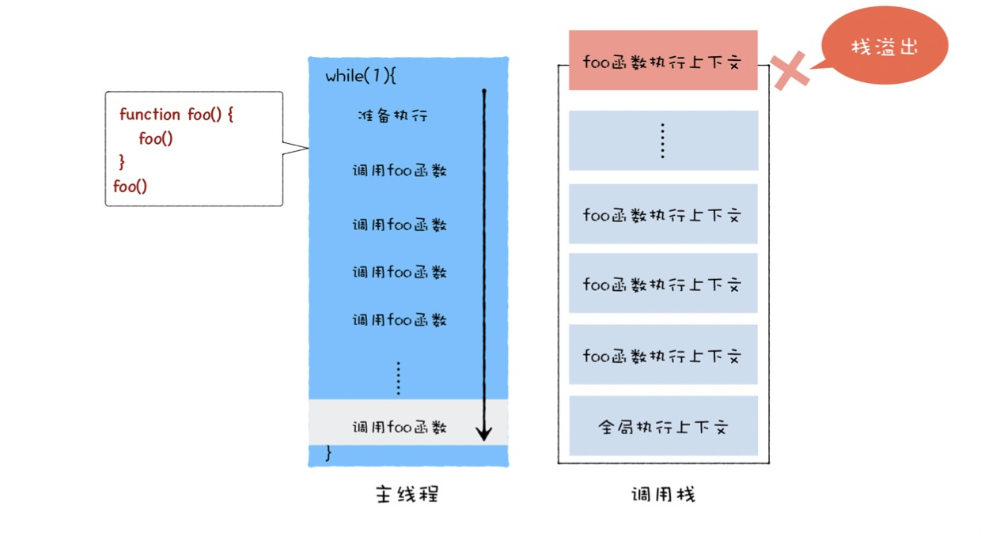
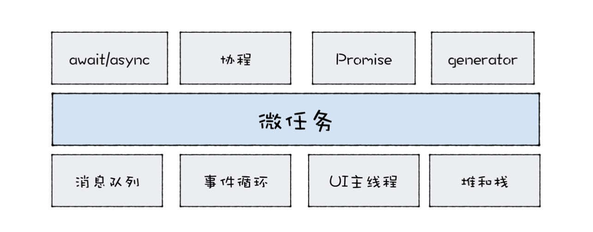

指消息队列中等待被主线程执行的事件,由事件触发线程维护
调用栈是一种数据结构,用来管理在主线程上执行的函数的调用关系 
指需要异步执行的函数,执行时机是在主函数执行结束之后,当前宏任务结束之前,由js引擎线程维护 微任务解决了宏任务执行世纪不可控的问题.
引入微任务主要是由于主线程执行消息队列中宏任务的时间颗粒度太粗,
微任务技术栈:(消息队列,主线程,调用栈)

每个宏任务都会维护一个微任务队列